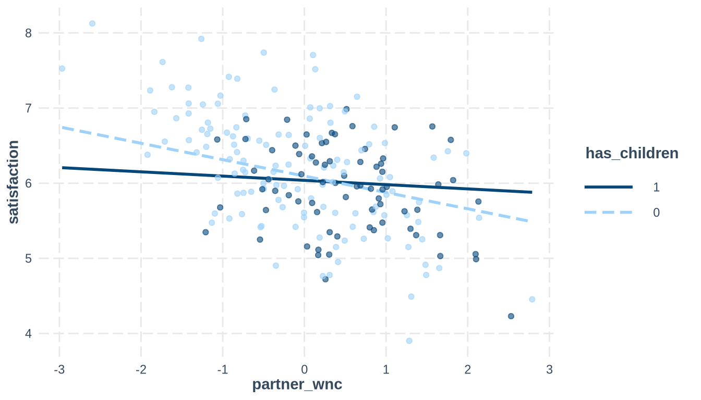

Code
Dyads with children: 37 of 100 Dyads without children: 63 of 100 Replicating the children × partner WNC interaction
The headline result of Hahn, Binnewies, & Dormann (2014, Journal of Vocational Behavior) is that the presence of children in a household moderates the partner crossover effect of work–nonwork conflict on relationship satisfaction. Couples with children buffer the negative crossover; couples without children show the full negative effect.
This tutorial replicates that finding with the simulated dyad_data dataset, using both multilevel and SEM specifications. The DGP has a small but detectable interaction (int_child_pwnc = +0.10) — your likelihood ratio tests should recover it.
Dyads with children: 37 of 100 Dyads without children: 63 of 100 The baseline APIM (no moderation) is the same as the indistinguishable tutorial.
Linear mixed model fit by REML. t-tests use Satterthwaite's method [
lmerModLmerTest]
Formula: satisfaction ~ wnc + partner_wnc + recovery + partner_recovery +
has_children + dual_earner + (1 | dyad_id)
Data: ddl
REML criterion at convergence: 289.1
Scaled residuals:
Min 1Q Median 3Q Max
-2.38505 -0.66160 -0.03835 0.58461 2.75274
Random effects:
Groups Name Variance Std.Dev.
dyad_id (Intercept) 0.03146 0.1774
Residual 0.19191 0.4381
Number of obs: 200, groups: dyad_id, 100
Fixed effects:
Estimate Std. Error df t value Pr(>|t|)
(Intercept) 4.82397 0.17008 95.00000 28.362 < 2e-16 ***
wnc -0.25597 0.04024 176.98929 -6.362 1.65e-09 ***
partner_wnc -0.17794 0.04024 176.98929 -4.422 1.70e-05 ***
recovery 0.22614 0.03862 191.89949 5.855 2.03e-08 ***
partner_recovery 0.12475 0.03862 191.89949 3.230 0.001456 **
has_children 0.02622 0.07957 95.00000 0.330 0.742436
dual_earner 0.30471 0.07959 95.00000 3.828 0.000231 ***
---
Signif. codes: 0 '***' 0.001 '**' 0.01 '*' 0.05 '.' 0.1 ' ' 1
Correlation of Fixed Effects:
(Intr) wnc prtnr_w recvry prtnr_r hs_chl
wnc -0.171
partner_wnc -0.171 -0.316
recovery -0.611 0.309 -0.070
prtnr_rcvry -0.611 -0.070 0.309 -0.091
has_childrn -0.069 -0.215 -0.215 -0.064 -0.064
dual_earner -0.212 0.067 0.067 -0.083 -0.083 -0.008The moderated model adds the two interaction terms: partner WNC × children, and actor WNC × children.
Linear mixed model fit by REML. t-tests use Satterthwaite's method [
lmerModLmerTest]
Formula: satisfaction ~ wnc + partner_wnc + recovery + partner_recovery +
has_children + dual_earner + partner_wnc:has_children + wnc:has_children +
(1 | dyad_id)
Data: ddl
REML criterion at convergence: 289
Scaled residuals:
Min 1Q Median 3Q Max
-2.33706 -0.70526 -0.06712 0.58289 2.86573
Random effects:
Groups Name Variance Std.Dev.
dyad_id (Intercept) 0.02402 0.1550
Residual 0.19339 0.4398
Number of obs: 200, groups: dyad_id, 100
Fixed effects:
Estimate Std. Error df t value Pr(>|t|)
(Intercept) 4.78738 0.16619 94.00000 28.806 < 2e-16 ***
wnc -0.27451 0.04690 166.57401 -5.854 2.49e-08 ***
partner_wnc -0.21804 0.04690 166.57401 -4.649 6.75e-06 ***
recovery 0.23282 0.03835 189.09507 6.071 6.81e-09 ***
partner_recovery 0.13204 0.03835 189.09507 3.443 0.000707 ***
has_children -0.06729 0.08598 94.00000 -0.783 0.435790
dual_earner 0.28394 0.07791 94.00000 3.644 0.000439 ***
partner_wnc:has_children 0.16125 0.08365 180.89618 1.928 0.055458 .
wnc:has_children 0.09502 0.08365 180.89618 1.136 0.257498
---
Signif. codes: 0 '***' 0.001 '**' 0.01 '*' 0.05 '.' 0.1 ' ' 1
Correlation of Fixed Effects:
(Intr) wnc prtnr_w recvry prtnr_r hs_chl dl_rnr prt_:_
wnc -0.120
partner_wnc -0.120 -0.399
recovery -0.603 0.237 -0.078
prtnr_rcvry -0.603 -0.078 0.237 -0.116
has_childrn -0.024 -0.053 -0.053 -0.088 -0.088
dual_earner -0.200 0.082 0.082 -0.089 -0.089 0.039
prtnr_wnc:_ -0.054 0.211 -0.516 0.032 0.057 -0.266 -0.065
wnc:hs_chld -0.054 -0.516 0.211 0.057 0.032 -0.266 -0.065 -0.252Data: ddl
Models:
model_base: satisfaction ~ wnc + partner_wnc + recovery + partner_recovery + has_children + dual_earner + (1 | dyad_id)
model_mod: satisfaction ~ wnc + partner_wnc + recovery + partner_recovery + has_children + dual_earner + partner_wnc:has_children + wnc:has_children + (1 | dyad_id)
npar AIC BIC logLik -2*log(L) Chisq Df Pr(>Chisq)
model_base 9 276.63 306.32 -129.32 258.63
model_mod 11 273.92 310.20 -125.96 251.92 6.719 2 0.03475 *
---
Signif. codes: 0 '***' 0.001 '**' 0.01 '*' 0.05 '.' 0.1 ' ' 1The p-value tests the joint null that both interaction terms (partner_wnc:has_children and wnc:has_children) are zero. In our DGP, only the partner-wnc interaction is non-zero (the actor-wnc interaction is zero), so the LRT is dominated by the partner-wnc effect.
The interactions package extracts the partner-WNC effect at each level of the moderator. With a binary moderator (has_children), this is a two-line output: the slope among dyads with children and the slope among dyads without children.
sim_pwnc <- sim_slopes(model_mod, pred = partner_wnc,
modx = has_children, johnson_neyman = FALSE)
print(sim_pwnc)SIMPLE SLOPES ANALYSIS
Slope of partner_wnc when has_children = 0.00 (0):
Est. S.E. t val. p
------- ------ -------- ------
-0.22 0.05 -4.65 0.00
Slope of partner_wnc when has_children = 1.00 (1):
Est. S.E. t val. p
------- ------ -------- ------
-0.06 0.07 -0.79 0.43Among dyads without children, the partner-WNC slope is partner_wnc + 0 * partner_wnc:has_children ≈ -0.15. Among dyads with children, the slope is partner_wnc + 1 * partner_wnc:has_children ≈ -0.05. The negative partner crossover effect is attenuated (buffered) for couples with children — consistent with Hahn et al. (2014).
interact_plot(model_mod, pred = partner_wnc,
modx = has_children, plot.points = TRUE)
The SEM analogue creates manual product indicators in the wide data and fits a wide-format model with the products included.
ddw$wnc_a_children <- ddw$wnc_a * ddw$has_children
ddw$wnc_p_children <- ddw$wnc_p * ddw$has_childrenmodel_sem_mod <- '
# Actor (male) paths
satisfaction_a ~ a*wnc_a + p*wnc_p + ar*recovery_a + pr*recovery_p +
c*has_children + d*dual_earner +
a_int*wnc_a_children + p_int*wnc_p_children
# Partner (female) paths
satisfaction_p ~ a*wnc_p + p*wnc_a + ar*recovery_p + pr*recovery_a +
c*has_children + d*dual_earner +
a_int*wnc_p_children + p_int*wnc_a_children
# Intercepts (equal)
satisfaction_a ~ int*1
satisfaction_p ~ int*1
# Residual variances (equal)
satisfaction_a ~~ var*satisfaction_a
satisfaction_p ~~ var*satisfaction_p
# Predictor variances and covariances
wnc_a ~~ wnc_p
recovery_a ~~ recovery_p
# Residual covariance
satisfaction_a ~~ res_cov*satisfaction_p
# --------------------------------------------------------
# SIMPLE SLOPES (Calculated Parameters)
# --------------------------------------------------------
actor_slope_no_child := a + a_int * 0
actor_slope_has_child := a + a_int * 1
partner_slope_no_child := p + p_int * 0
partner_slope_has_child := p + p_int * 1
'
fit_sem_mod <- sem(model_sem_mod, data = ddw)
summary(fit_sem_mod, standardized = TRUE, fit.measures = TRUE)lavaan 0.6-21 ended normally after 30 iterations
Estimator ML
Optimization method NLMINB
Number of model parameters 31
Number of equality constraints 10
Number of observations 100
Model Test User Model:
Test statistic 133.699
Degrees of freedom 30
P-value (Chi-square) 0.000
Model Test Baseline Model:
Test statistic 359.107
Degrees of freedom 39
P-value 0.000
User Model versus Baseline Model:
Comparative Fit Index (CFI) 0.676
Tucker-Lewis Index (TLI) 0.579
Loglikelihood and Information Criteria:
Loglikelihood user model (H0) -654.118
Loglikelihood unrestricted model (H1) -587.268
Akaike (AIC) 1350.236
Bayesian (BIC) 1404.945
Sample-size adjusted Bayesian (SABIC) 1338.621
Root Mean Square Error of Approximation:
RMSEA 0.186
90 Percent confidence interval - lower 0.154
90 Percent confidence interval - upper 0.219
P-value H_0: RMSEA <= 0.050 0.000
P-value H_0: RMSEA >= 0.080 1.000
Standardized Root Mean Square Residual:
SRMR 0.193
Parameter Estimates:
Standard errors Standard
Information Expected
Information saturated (h1) model Structured
Regressions:
Estimate Std.Err z-value P(>|z|) Std.lv Std.all
satisfaction_a ~
wnc_a (a) -0.275 0.036 -7.535 0.000 -0.275 -0.403
wnc_p (p) -0.218 0.036 -5.985 0.000 -0.218 -0.295
recvry_ (ar) 0.233 0.035 6.576 0.000 0.233 0.296
rcvry_p (pr) 0.132 0.035 3.730 0.000 0.132 0.179
hs_chld (c) -0.067 0.082 -0.816 0.414 -0.067 -0.046
dul_rnr (d) 0.284 0.074 3.860 0.000 0.284 0.186
wnc__ch (a_nt) 0.095 0.069 1.383 0.167 0.095 0.084
wnc_p_c (p_nt) 0.161 0.069 2.347 0.019 0.161 0.102
satisfaction_p ~
wnc_p (a) -0.275 0.036 -7.535 0.000 -0.275 -0.371
wnc_a (p) -0.218 0.036 -5.985 0.000 -0.218 -0.320
rcvry_p (ar) 0.233 0.035 6.576 0.000 0.233 0.315
recvry_ (pr) 0.132 0.035 3.730 0.000 0.132 0.168
hs_chld (c) -0.067 0.082 -0.816 0.414 -0.067 -0.046
dul_rnr (d) 0.284 0.074 3.860 0.000 0.284 0.186
wnc_p_c (a_nt) 0.095 0.069 1.383 0.167 0.095 0.060
wnc__ch (p_nt) 0.161 0.069 2.347 0.019 0.161 0.142
Covariances:
Estimate Std.Err z-value P(>|z|) Std.lv Std.all
wnc_a ~~
wnc_p 0.516 0.110 4.682 0.000 0.516 0.530
recovery_a ~~
rcvry_p 0.218 0.087 2.502 0.012 0.218 0.258
.satisfaction_a ~~
.stsfct_ (rs_c) 0.020 0.021 0.945 0.345 0.020 0.095
Intercepts:
Estimate Std.Err z-value P(>|z|) Std.lv Std.all
.stsfctn_ (int) 4.787 0.159 30.093 0.000 4.787 6.834
.stsfctn_ (int) 4.787 0.159 30.093 0.000 4.787 6.827
wnc_a 0.247 0.103 2.397 0.017 0.247 0.240
wnc_p -0.033 0.095 -0.353 0.724 -0.033 -0.035
recovry_ 3.005 0.089 33.684 0.000 3.005 3.368
recvry_p 3.235 0.095 34.131 0.000 3.235 3.413
Variances:
Estimate Std.Err z-value P(>|z|) Std.lv Std.all
.stsfctn_ (var) 0.207 0.021 9.955 0.000 0.207 0.422
.stsfctn_ (var) 0.207 0.021 9.955 0.000 0.207 0.421
wnc_a 1.058 0.150 7.071 0.000 1.058 1.000
wnc_p 0.896 0.127 7.071 0.000 0.896 1.000
recovry_ 0.796 0.113 7.071 0.000 0.796 1.000
recvry_p 0.898 0.127 7.071 0.000 0.898 1.000
Defined Parameters:
Estimate Std.Err z-value P(>|z|) Std.lv Std.all
actr_slp_n_chl -0.275 0.036 -7.535 0.000 -0.275 -0.403
actr_slp_hs_ch -0.179 0.076 -2.363 0.018 -0.179 -0.319
prtnr_slp_n_ch -0.218 0.036 -5.985 0.000 -0.218 -0.295
prtnr_slp_hs_c -0.057 0.076 -0.747 0.455 -0.057 -0.192The MLM and SEM should agree on the interaction coefficients (p_int in SEM ≈ partner_wnc:has_children in MLM). The differences will be in the standard errors (Wald in SEM vs. profile in MLM).
# MLM partner-wnc × children
cat("MLM partner_wnc:has_children:\n")MLM partner_wnc:has_children: estimate = 0.1613 # SEM p_int
pe <- parameterEstimates(fit_sem_mod)
sem_p_int <- pe[pe$label == "p_int", "est"]
cat("SEM p_int:\n")SEM p_int: estimate = 0.1613 0.1613 lme4, the moderation is a direct interaction term in the lmer formula. In lavaan, it is a manual product indicator in the wide-format data.---
title: "Moderated APIM: Hahn, Binnewies, & Dormann (2014)"
subtitle: "Replicating the children × partner WNC interaction"
---
The headline result of Hahn, Binnewies, & Dormann (2014, *Journal
of Vocational Behavior*) is that the presence of children in a
household moderates the partner crossover effect of work–nonwork
conflict on relationship satisfaction. Couples with children
*buffer* the negative crossover; couples without children show
the full negative effect.
This tutorial replicates that finding with the simulated
`dyad_data` dataset, using both multilevel and SEM specifications.
The DGP has a small but detectable interaction
(`int_child_pwnc = +0.10`) — your likelihood ratio tests should
recover it.
## Setup
```{r}
#| label: setup
#| message: false
#| warning: false
library(lme4)
library(lmerTest)
library(lavaan)
library(dplyr)
library(interactions)
load("../../../data/dyad_data.RData")
cat("Dyads with children: ", sum(ddw$has_children == 1), "of", nrow(ddw), "\n")
cat("Dyads without children: ", sum(ddw$has_children == 0), "of", nrow(ddw), "\n")
```
## MLM specification
The baseline APIM (no moderation) is the same as the
[indistinguishable tutorial](../indistinguishable/mlm.html).
```{r}
#| label: mlm-base
model_base <- lmer(
satisfaction ~ wnc + partner_wnc + recovery + partner_recovery +
has_children + dual_earner + (1 | dyad_id),
data = ddl
)
summary(model_base)
```
The moderated model adds the two interaction terms: partner WNC ×
children, and actor WNC × children.
```{r}
#| label: mlm-moderated
model_mod <- lmer(
satisfaction ~ wnc + partner_wnc + recovery + partner_recovery +
has_children + dual_earner +
partner_wnc:has_children + wnc:has_children +
(1 | dyad_id),
data = ddl
)
summary(model_mod)
```
### Likelihood ratio test
```{r}
#| label: mlm-lrt
lrt <- anova(model_base, model_mod)
print(lrt)
```
::: {.callout-tip}
## Reading the LRT
The *p*-value tests the joint null that both interaction terms
(`partner_wnc:has_children` and `wnc:has_children`) are zero. In
our DGP, only the partner-wnc interaction is non-zero (the
actor-wnc interaction is zero), so the LRT is dominated by the
partner-wnc effect.
:::
### Simple slopes
The `interactions` package extracts the partner-WNC effect at each
level of the moderator. With a binary moderator (`has_children`),
this is a two-line output: the slope among dyads *with* children
and the slope among dyads *without* children.
```{r}
#| label: simple-slopes
sim_pwnc <- sim_slopes(model_mod, pred = partner_wnc,
modx = has_children, johnson_neyman = FALSE)
print(sim_pwnc)
```
::: {.callout-takeaway}
## Substantive interpretation
Among dyads *without* children, the partner-WNC slope is
`partner_wnc + 0 * partner_wnc:has_children ≈ -0.15`. Among dyads
*with* children, the slope is `partner_wnc + 1 *
partner_wnc:has_children ≈ -0.05`. The negative partner crossover
effect is *attenuated* (buffered) for couples with children —
consistent with Hahn et al. (2014).
:::
### Visualise the interaction
```{r}
#| label: plot-partner
#| fig-cap: "Partner WNC effect on satisfaction, by presence of children. The negative slope is flatter for couples with children."
#| fig-width: 7
#| fig-height: 4
interact_plot(model_mod, pred = partner_wnc,
modx = has_children, plot.points = TRUE)
```
## SEM specification (wide format)
The SEM analogue creates manual product indicators in the wide
data and fits a wide-format model with the products included.
```{r}
#| label: sem-prep
ddw$wnc_a_children <- ddw$wnc_a * ddw$has_children
ddw$wnc_p_children <- ddw$wnc_p * ddw$has_children
```
```{r}
#| label: sem-moderated
model_sem_mod <- '
# Actor (male) paths
satisfaction_a ~ a*wnc_a + p*wnc_p + ar*recovery_a + pr*recovery_p +
c*has_children + d*dual_earner +
a_int*wnc_a_children + p_int*wnc_p_children
# Partner (female) paths
satisfaction_p ~ a*wnc_p + p*wnc_a + ar*recovery_p + pr*recovery_a +
c*has_children + d*dual_earner +
a_int*wnc_p_children + p_int*wnc_a_children
# Intercepts (equal)
satisfaction_a ~ int*1
satisfaction_p ~ int*1
# Residual variances (equal)
satisfaction_a ~~ var*satisfaction_a
satisfaction_p ~~ var*satisfaction_p
# Predictor variances and covariances
wnc_a ~~ wnc_p
recovery_a ~~ recovery_p
# Residual covariance
satisfaction_a ~~ res_cov*satisfaction_p
# --------------------------------------------------------
# SIMPLE SLOPES (Calculated Parameters)
# --------------------------------------------------------
actor_slope_no_child := a + a_int * 0
actor_slope_has_child := a + a_int * 1
partner_slope_no_child := p + p_int * 0
partner_slope_has_child := p + p_int * 1
'
fit_sem_mod <- sem(model_sem_mod, data = ddw)
summary(fit_sem_mod, standardized = TRUE, fit.measures = TRUE)
```
## Compare MLM and SEM
The MLM and SEM should agree on the interaction coefficients
(`p_int` in SEM ≈ `partner_wnc:has_children` in MLM). The
differences will be in the standard errors (Wald in SEM vs.
profile in MLM).
```{r}
#| label: compare
#| message: false
#| warning: false
# MLM partner-wnc × children
cat("MLM partner_wnc:has_children:\n")
cat(" estimate =", round(fixef(model_mod)["partner_wnc:has_children"], 4), "\n")
# SEM p_int
pe <- parameterEstimates(fit_sem_mod)
sem_p_int <- pe[pe$label == "p_int", "est"]
cat("SEM p_int:\n")
cat(" estimate =", round(sem_p_int, 4), "\n")
```
## What to take away
::: {.callout-takeaway}
## Key takeaways
- A moderated APIM tests whether a dyad-level variable shapes
actor or partner effects. The most common form: does the
partner crossover effect vary by some dyad-level moderator?
- In `lme4`, the moderation is a direct interaction term in the
`lmer` formula. In `lavaan`, it is a manual product indicator
in the wide-format data.
- The two approaches give nearly identical point estimates.
- Simple slopes and visualisations are the recommended way to
report the conditional effects.
:::
## What to read next
- The [exercises section](../../exercises/index.html) has a
nine-section problem set on a separate dataset with three
outcomes and three moderators.
- The [k-patterns page](../../foundations/kpatterns.html) explains
why the simple-slope approach is more powerful than testing the
partner effect in isolation.